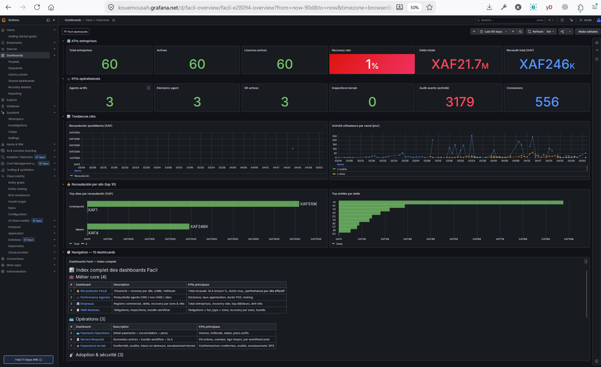
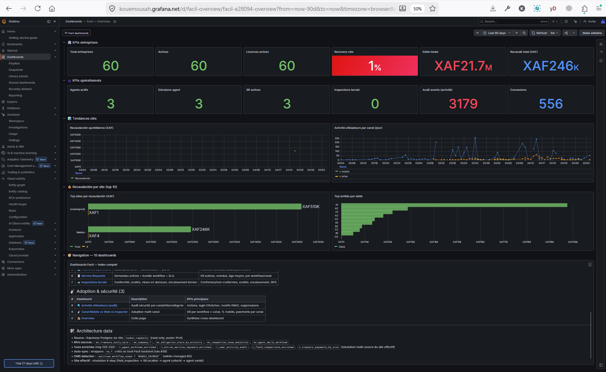
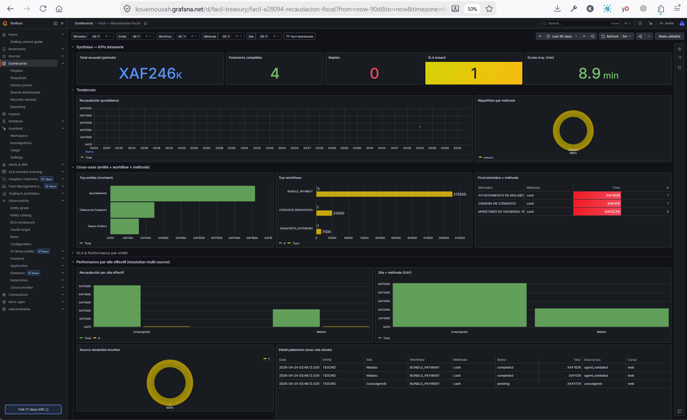
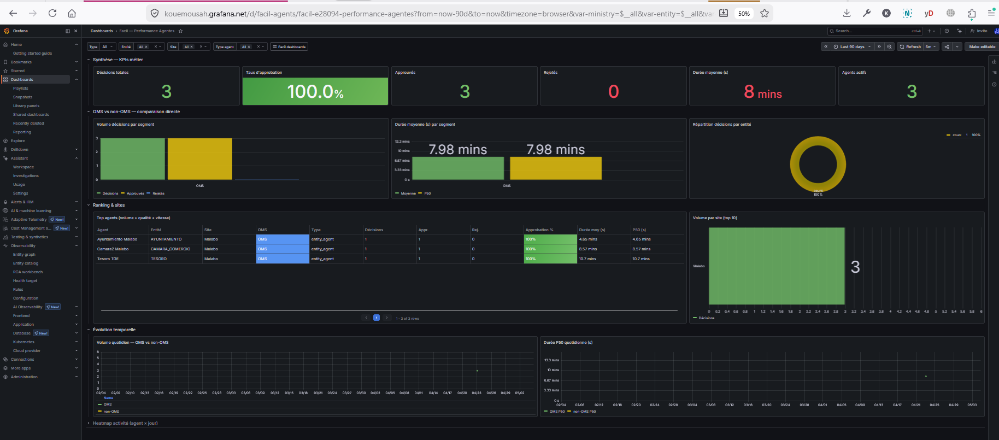
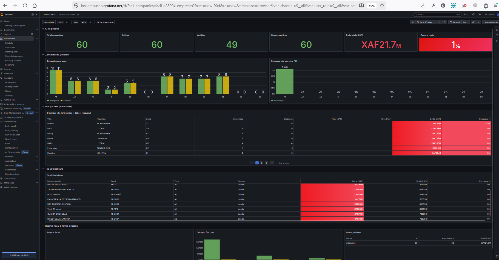
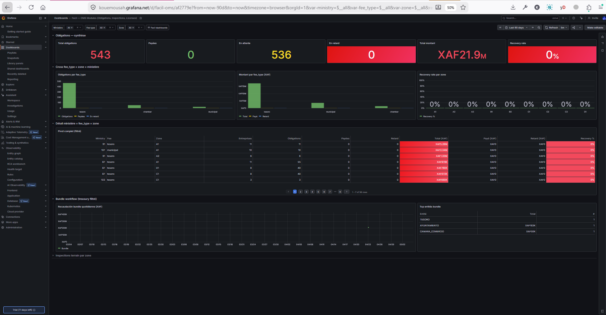
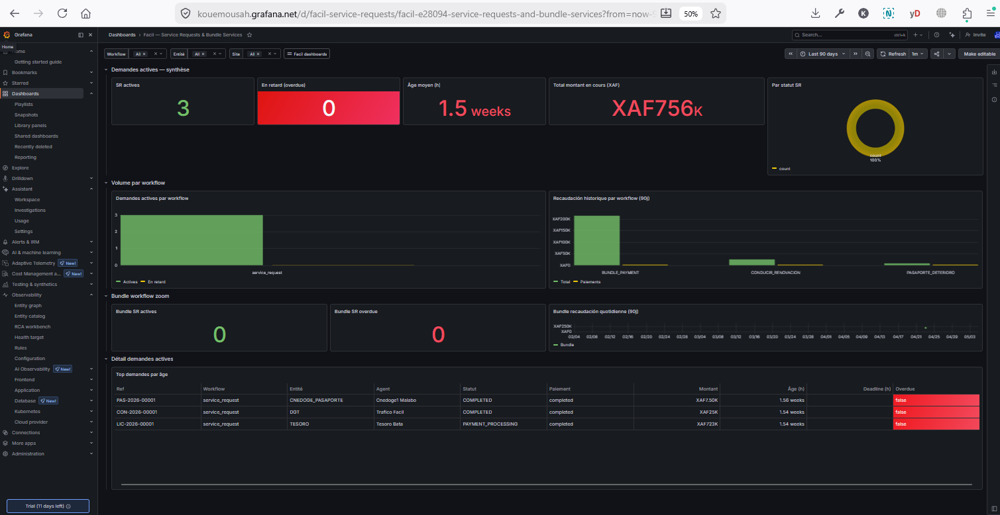
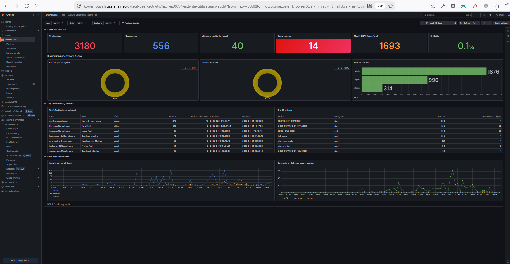
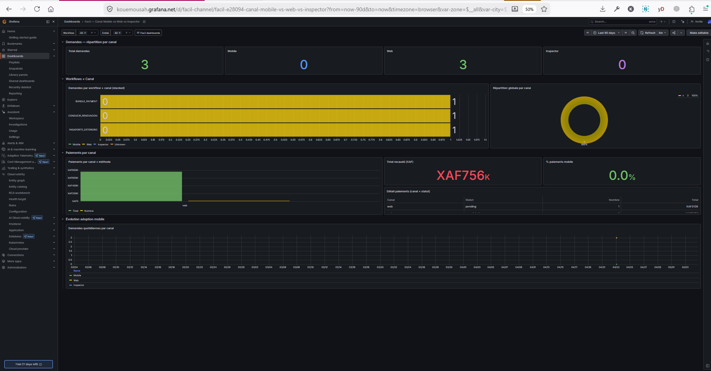
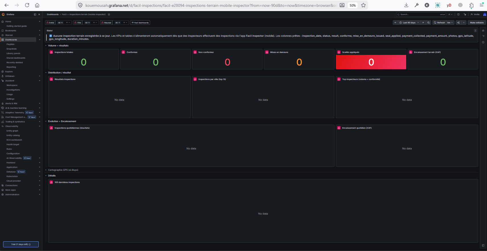

Grafana Dashboards — Analytics Engineering
10 production-grade Grafana dashboards built on a 4-layer semantic data architecture, enabling government decision-makers (treasury, ministry agents, supervisors, inspectors) to answer business questions in < 30 seconds. This page documents the why, the how, and the decisions driven by each dashboard.
1. Why & Business Context #
The problem
Before this initiative, decision-makers across Facil’s 20 government entities operated without a unified analytical view. Each ministry had isolated reports, treasury reconciliation was performed manually in spreadsheets, agent performance was assessed anecdotally, and inspectors had no field analytics. The platform was generating 3,342+ audit events, processing payments in XAF, and assigning service requests across 5 cities — but none of this data was actionable in real time.
The need
- Treasury needs daily revenue tracking by ministry, entity, payment method, and site, with reconciliation status visible at a glance.
- Ministry agents need to know their workload, SLA pressure, and pending obligations.
- Supervisors need cross-team performance comparisons and OMS (One-Stop-Shop) module adoption.
- Inspectors need field activity tracking with GPS, photos, and seal counts.
- Executives need a single Overview to see the platform’s pulse.
Why Grafana (and Looker Studio in parallel)
We evaluated three options: a custom React dashboard suite, Looker Studio, and Grafana Cloud. The
decision was to run Grafana and Looker Studio in parallel, with a runtime toggle in
/admin/dashboards/config driven by the dashboard_provider_enum column in
dashboard_registrations. This dual-provider design lets us A/B compare in production
and avoid vendor lock-in.
| Criterion | Grafana Cloud | Looker Studio | Custom React |
|---|---|---|---|
| Time-to-first-dashboard | < 1 day | ~2 days (UI-only) | 2-3 weeks per dashboard |
| Dashboards-as-code (versioned in Git) | ✅ JSON via API | ❌ UI-only, no API for content | ✅ React + manual |
| SQL-first (Postgres native) | ✅ | ⚠ JDBC, MV-blind by default | ✅ |
| Embed in admin (iframe + auth) | ✅ d-solo + kiosk=tv | ✅ embed token | N/A |
| Cost (10 dashboards, 100+ agents) | Free tier sufficient | Free | ~3 dev-months |
| Auto-refresh + alerting | ✅ native | ⚠ limited | To build |
Grafana won on time-to-value and dashboards-as-code. Looker Studio remained as a fallback / non-tech stakeholder option. Both consume the same semantic layer (Section 2).
Goals (objectifs métiers)
- Reduce time-to-decision: from days (manual report request) to seconds (live dashboard).
- Single source of truth: every KPI traceable to one SQL view, with audit trail (
location_sourcecolumn). - Cross-dimensional drill-down: every dashboard supports filter chains (ministry → entity → site → period).
- Per-site granularity: revenue, agents, inspections all attributable to specific cities (Malabo, Bata, Mongomo, …).
- OMS adoption tracking: dynamic classifier (
workflow_codes ? 'BUNDLE_PAYMENT') to measure progressive rollout.
2. Analytics Engineering — the Semantic Layer #
Note on terminology: this work is Analytics Engineering, not Business Data Analysis. A Business Data Analyst consumes dashboards to find insights; an Analytics Engineer builds the semantic layer that makes those insights reliable, fast, and consistent across consumers (Grafana, Looker, custom apps). The work below is the latter.
Layer 1 — Aggregations (MVs)
Materialized Views pre-compute heavy aggregations (sum, count, group by) on a 15-minute cron. They are the backup and historical source. Live queries on enriched views are the primary path for dashboards that need real-time data — MVs are read only when historical aggregations are needed (cf. Memory Rule #22).
Layer 2 — Enriched Views (the heart)
This is the semantic layer — the canonical place where business logic lives:
- Joins resolved once: entities, locations, agents, ministries are joined here so dashboards never reinvent the join.
- Classifiers computed:
is_oms = workflow_codes ? 'BUNDLE_PAYMENT',is_supervisor = role_code ILIKE '%supervisor%', etc. - Multi-source resolution (the killer feature): the canonical site for a payment is resolved as a 4-step
COALESCEchain (field inspection → service request → agent collected → agent validated), with alocation_sourceaudit column so consumers can trust the data. - Granted to
looker_readonly: a dedicated read-only role with no write privileges, isolating BI access from application access.
-- Example: v_treasury_payments_by_site (migration 322)
CREATE OR REPLACE VIEW v_treasury_payments_by_site AS
SELECT
p.id, p.amount, p.status, p.payment_method,
e.entity_code, e.ministry_code,
COALESCE(
fi.entity_location_id, -- 1. Field inspection (most precise)
sr.entity_location_id, -- 2. Service request
ap_collected.entity_location_id, -- 3. Agent who collected
ap_validated.entity_location_id -- 4. Agent who validated (fallback)
) AS effective_location_id,
CASE
WHEN fi.entity_location_id IS NOT NULL THEN 'field_inspection'
WHEN sr.entity_location_id IS NOT NULL THEN 'service_request'
WHEN ap_collected.entity_location_id IS NOT NULL THEN 'agent_collected'
WHEN ap_validated.entity_location_id IS NOT NULL THEN 'agent_validated'
ELSE 'unassigned'
END AS location_source -- audit trail
FROM service_payments p
LEFT JOIN entities e ON e.code = p.entity_code
LEFT JOIN service_requests sr ON sr.id = p.service_request_id
LEFT JOIN field_inspections fi ON fi.service_request_id = sr.id
LEFT JOIN agent_profiles ap_collected ON ap_collected.user_id = p.collected_by
LEFT JOIN agent_profiles ap_validated ON ap_validated.user_id = p.validated_by;
GRANT SELECT ON v_treasury_payments_by_site TO looker_readonly;Layer 3 — Auto-Wrappers
Looker Studio’s JDBC driver hides Materialized Views (relkind='m'). To make MVs
visible in the picker without writing manual wrappers, the backend boots run
sync_looker_view_wrappers() which auto-creates a vw_* view of
relkind='v' over every MV granted to looker_readonly. Grafana doesn’t
need this layer (its Postgres driver sees MVs natively), so dashboards reference v_* and
mv_* directly.
Layer 4 — Consumers (Grafana + Looker)
Both providers consume the same Layer 2 views. The dashboard_registrations table stores
a provider column ('looker' | 'grafana') so each registered dashboard knows
how to be embedded.
3. Personas & Decision Map #
Every dashboard must answer at least one concrete decision. The mapping below is the contract: if a stakeholder can’t answer their listed questions in < 30 seconds, the dashboard is broken and gets reworked.
| Persona | Primary dashboards | Decisions driven |
|---|---|---|
| Treasury Manager | Recaudación Fiscal, Payments Operations, Overview | Daily revenue alerts, reconciliation gaps, payment-method drift, ministry contribution |
| Ministry Agent (CNEDOGE, MIN_TRABAJO, …) | Performance Agentes, Service Requests | My queue depth, my SLA pressure, peer benchmarking |
| OMS Supervisor (AYUNTAMIENTO, CAMARA_COMERCIO) | OMS Modules, Empresas, Inspections | Bundle obligation completion rate, license issuance velocity, field inspection quality |
| Inspector Chief | Inspections, Mobile vs Web vs Inspector | Field activity by zone/city, photo evidence rate, seal usage, inspector adoption of mobile app |
| Citizen Services Director | Empresas, Service Requests, User Activity | Active company cohort by zone, request backlog, citizen audit trail |
| Executive (DG / Minister) | Overview only | Platform health pulse, cross-ministry comparison, mobile adoption velocity |
4. The 10 Dashboards #
Each dashboard below documents: screenshot, primary KPIs with their
SQL formula, filters, the source view, and the concrete
decisions it enables. All dashboards share a tag (facil) and link to each
other via the navigation dropdown.
00 — Overview #
UID: facil-overview · Audience: Executive · Filters: period only


The pulse of the platform. 4-7 stat cards on top (revenue, active companies, agents online, audit events), 1-2 timeseries showing trend, and a navigation dropdown to all 9 other dashboards.
| KPI | Formula (simplified) | Source | Decision |
|---|---|---|---|
| Recaudación total (XAF) | SUM(amount) WHERE status='completed' | mv_treasury_daily_kpis | Daily revenue alert if < threshold |
| Empresas activas | COUNT(*) WHERE status='active' | mv_company_global_stats | Onboarding velocity |
| Agentes activos (24h) | COUNT(DISTINCT user_id) FROM v_user_activity_audit WHERE last_seen > now()-interval'24h' AND role IN ('agent_*') | v_user_activity_audit | Capacity planning |
| Eventos de auditoría | COUNT(*) FROM audit_logs LAST 7 DAYS | v_user_activity_audit | Anomaly detection |
01 — Recaudación Fiscal #
UID: facil-treasury · Audience: Treasury Manager · Filters: Ministry, Entity, Workflow, Method, Site (multi-source)

The flagship dashboard. Resolves revenue per physical site (city) using the 4-step
COALESCE chain so a payment collected by an inspector in Bata is attributed to Bata, not to the
validating agent in Malabo. The location_source donut shows the resolution breakdown.
| KPI | Formula | Source | Decision |
|---|---|---|---|
| Recaudación total | SUM(amount) WHERE status='completed' | v_treasury_payments_by_site | Revenue tracking |
| Recovery % | SUM(completed) / SUM(total) * 100 | v_treasury_payments_by_site | Reconciliation gap |
| Per-site breakdown | GROUP BY effective_location_id | v_treasury_payments_by_site | Site performance |
| Method mix | GROUP BY payment_method | v_treasury_payments_by_site | BANGE adoption |
| Source attribution | GROUP BY location_source | v_treasury_payments_by_site | Data quality audit |
02 — Performance Agentes #
UID: facil-agents · Audience: Agent + Ministry Supervisor · Filters: OMS toggle, Entity, Site, Agent Type

OMS toggle (custom variable) lets supervisors compare bundle-payment teams (AYUNTAMIENTO, CAMARA_COMERCIO) vs traditional ministry teams. Drill: ministry → entity → site → agent.
| KPI | Formula | Source | Decision |
|---|---|---|---|
| Active agents | COUNT(DISTINCT user_id) WHERE last_assignment > now()-interval'7d' | v_agent_workload_enriched | Resource allocation |
| Avg queue depth | AVG(queue_size) | v_agent_workload_enriched | Hire / rebalance signal |
| SLA pressure | SUM(sla_breached) / SUM(total) | v_active_service_requests_enriched | Escalation alert |
| Top performers | ORDER BY validated_count DESC LIMIT 10 | v_agent_workload_enriched | Recognition / training |
03 — Empresas #
UID: facil-companies · Audience: Citizen Services Director · Filters: Zone, City (JSONB drill)

City filter uses JSONB drill on mv_company_global_stats.by_city — a pre-aggregated
analytics column. Single-row JSONB query → multiple rows expanded via
jsonb_array_elements().
| KPI | Formula | Source | Decision |
|---|---|---|---|
| Empresas registradas | COUNT(*) WHERE status IN ('active','pending') | mv_company_global_stats | Market penetration |
| Por zona (12 zones) | GROUP BY zone_code | mv_company_stats_by_zone | Regional outreach |
| Por ciudad (16 cities) | jsonb_array_elements(by_city) WHERE zone IN(...) | mv_company_global_stats | Local agent dispatch |
| Deuda por ciudad | (j->>'debt')::numeric ORDER BY DESC | JSONB drill | Collection priority |
04 — OMS Modules #
UID: facil-oms · Audience: OMS Supervisor · Filters: Ministry, Fee_type, Zone, Site

OMS = One-Stop-Shop. Tracks the bundle-payment workflow rollout: an entity is OMS if its
workflow_codes JSONB array contains 'BUNDLE_PAYMENT'. This classifier is
admin-managed via UI (no code redeploy needed) and consumed via the JSONB
? operator.
| KPI | Formula | Source | Decision |
|---|---|---|---|
| OMS entities | COUNT(*) WHERE workflow_codes ? 'BUNDLE_PAYMENT' | entities | Rollout progress |
| Obligations issued | COUNT(*) FROM license_obligations | mv_obligation_stats_by_ministry | Bundle adoption |
| Avg fees per bundle | AVG(amount) | mv_obligation_stats_by_ministry | Pricing benchmark |
| Completion rate | completed / issued | mv_obligation_stats_by_ministry | Friction diagnosis |
05 — Payments Operations #
UID: facil-payments · Audience: Treasury Operations · Filters: Status, Entity, Site
Screenshot not captured at the time of writing — data structure identical to v_treasury_payments_by_site; visual identical to dashboard 01 with operational status emphasis.
| KPI | Formula | Source | Decision |
|---|---|---|---|
| Pending validation | COUNT(*) WHERE workflow_status='pending_agent_review' | v_treasury_payments_by_site | Backlog alert |
| Reconciliation gap | SUM(bank) - SUM(reconciled) | bank_transactions + payments | Audit follow-up |
| Failed payments | COUNT(*) WHERE status='failed' | v_treasury_payments_by_site | Provider issue tracking |
06 — Service Requests #
UID: facil-service-requests · Audience: Ministry Agent · Filters: Workflow, Entity, Site

Active service requests with age buckets (0-24h, 24-72h, 3-7d, 7d+) for SLA tracking. Status breakdown shows the bottleneck stage of the workflow.
| KPI | Formula | Source | Decision |
|---|---|---|---|
| Active SR | COUNT(*) WHERE status NOT IN ('completed','cancelled') | v_active_service_requests_enriched | Backlog volume |
| Age buckets | CASE WHEN hours_since < 24 THEN '0-24h' ... | v_active_service_requests_enriched | SLA escalation trigger |
| Status mix | GROUP BY workflow_status | v_active_service_requests_enriched | Bottleneck identification |
07 — User Activity (Audit) #
UID: facil-user-activity · Audience: Security & Director · Filters: Channel, Role, Action Category

Built on v_user_activity_audit which canonicalizes 3,342+ audit_logs events with channel
detection (mobile/web/inspector) via user-agent regex and action_category mapping.
08 — Mobile vs Web vs Inspector #
UID: facil-channel · Audience: Director & Product · Filters: Workflow, Entity

Tracks the adoption of the mobile citizen app and the inspector app vs traditional web access. Key for product strategy: where to invest UX effort.
09 — Inspections (field) #
UID: facil-inspections · Audience: Inspector Chief · Filters: Entity, City, Result

Currently shows « No data » on most cards because field_inspections is
empty in production until the inspector mobile app captures its first reports. The schema is ready,
all KPIs and filters are wired, and noValue: "0" ensures no parasite errors.
5. Engineering Patterns #
Pattern A — Multi-source resolution (4-step COALESCE)
When a dimension can be derived from multiple sources with priority, never pick one arbitrarily — fallback in priority order with audit trail. This pattern resolved the « all agents in Malabo » problem where revenue from field inspections in Bata was wrongly attributed to the validating agent’s site.
Pattern B — JSONB classifier (admin-managed, no redeploy)
The OMS classifier (workflow_codes ? 'BUNDLE_PAYMENT') lives in the
entities table as a JSONB array. Admins toggle OMS status from the UI; dashboards
recompute instantly. No code change, no migration. Single source of truth.
Pattern C — Chained template variables
Filters chain via refresh: 1 on each variable: ministry → entity → site
population queries depend on the upstream selection. The population query for the
Site filter must be the catalog (v_entity_locations_browse), not the fact table —
otherwise sites without data become invisible.
// Grafana JSON: chained variables
{
"name": "site",
"query": "SELECT city FROM v_entity_locations_browse WHERE entity_code IN (${entity:sqlstring}) ORDER BY city",
"refresh": 1,
"multi": true
}Pattern D — Engine-agnostic Grafana primitives
Three Grafana-side primitives appear in all 10 dashboards and would work on MySQL / BigQuery /
Snowflake / SQL Server unchanged (verified in our reusable
GRAFANA_DASHBOARDS_AGENT.md v1.1):
${var:sqlstring}— the only way to handle multi-select « All ». Never'$var' = 'All' OR ...."unit": "currency:XAF"— thecurrency:prefix triggers ISO display. Without it, you get a literal « currencyXAF »."noValue": "0"— on stat panels, NULL becomes « No data ». This forces a clean 0.
6. Stack & Provisioning #
| Hosting | Grafana Cloud Free Tier (kouemousah.grafana.net) |
| Datasource | Postgres pooler IPv4 (aws-0-eu-west-3.pooler.supabase.com:6543) |
| BI role | looker_readonly (read-only on enriched views + MVs) |
| Dashboards-as-code | 10 JSON files in infra/grafana/dashboards/ |
| Push script | packages/backend/scripts/push_grafana_dashboards.py (idempotent API push) |
| Provisioning YAML | infra/grafana/provisioning/{datasources,dashboards}/ (for self-hosted) |
| Auto-refresh | 5 min default per dashboard |
| Embed in Facil admin | d-solo URL + kiosk=tv via DashboardConfigService._build_grafana_embed_url() |
| Token rotation | 7-day expiry on facil-deployer service account |
Reusable Agent
The work was distilled into infra/grafana/GRAFANA_DASHBOARDS_AGENT.md — a
reproducible 8-phase agent invokable via /grafana-dashboards slash-command. v1.1 added
a multi-engine adapter (Postgres / MySQL / BigQuery / Snowflake / SQL Server) so the same agent runs
on any project. 10 active guardrails neutralize known weaknesses (IPv4 pooler trap, currency format,
template variables, token leak, missing rollback, etc.).
7. Limits, Lineage & Roadmap #
Known limits (honest)
- No row-level security (RLS) on Grafana — anyone with the embed URL can see the dashboard. Mitigation: permission gate at the wrapper application layer (
dashboards.view_business). For real RLS, OAUTH2 community connector planned (Phase B.2). - Seed data has all agents in Malabo — per-site distribution depends on production agent profiles populating
entity_location_id. - Inspections dashboard empty — legitimately, until the inspector mobile app captures field reports.
- Token rotation — manual every 7 days. Automate via Cloud Scheduler + service account API.
- 05 Payments screenshot missing at the time of writing this doc — the dashboard is live; capture pending.
Data lineage (audit-ready)
Every panel can be traced through the stack:
Panel KPI
→ Dashboard JSON (infra/grafana/dashboards/NN_*.json)
→ SQL rawSql in panel definition
→ Enriched view (v_*_enriched, migration 320/321/322)
→ Source MV / table (granted to looker_readonly)
→ Origin transactional tableRoadmap
- Q3 2026: OAUTH2 community connector for true multi-tenant RLS.
- Q3 2026: Alerts on revenue threshold + SLA breach (Grafana native, push to Slack).
- Q4 2026: Per-ministry deep-dive dashboards (1 per ministry, currently aggregated).
- Q4 2026: Anomaly detection on user activity (audit log) via Grafana ML plugin.
Related documentation
- System Architecture — backend / data layer overview
- Database Schema — full table reference (145 tables)
infra/grafana/README.md— provisioning + push script referenceinfra/grafana/GRAFANA_DASHBOARDS_AGENT.md— reusable 8-phase agent